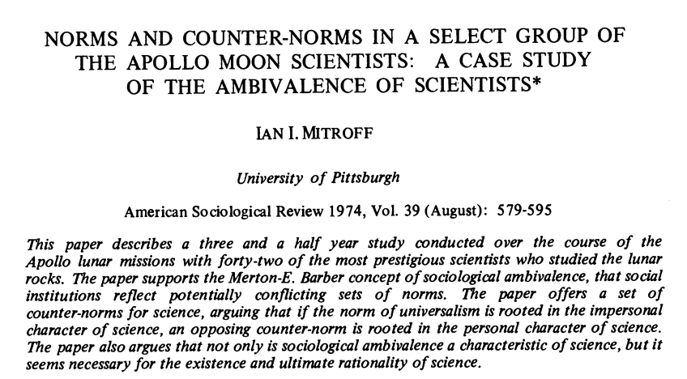

Scientific norms and counter-norms
2023-09-09 Mon
What is science, really?
Robert Merton

- a stock of accumulated knowledge (facts & findings)
- a set of characteristic methods
- a set of cultural values
Robert Merton
{kind=link}
Hogwash!



Science as a human activity
- Humans are…
- flawed
- often illogical
- emotional AND intellectual
- biased
- have blind spots
- By what means can we mitigate or overcome these?

Show recommendation

Alternative history depicting what might have happened had the Soviets beaten the United States to the Moon in the summer of 1969.
References

Kardash, C. M., & Edwards, O. V. (2012). Thinking and behaving like scientists: Perceptions of undergraduate science interns and their faculty mentors. Instructional Science, 40(6), 875–899. https://doi.org/10.1007/s11251-011-9195-0
Macfarlane, B., & Cheng, M. (2008). Communism, universalism and disinterestedness: Re-examining contemporary support among academics for merton’s scientific norms. Journal of Academic Ethics, 6(1), 67–78. https://doi.org/10.1007/s10805-008-9055-y
McCutcheon, J. (2019, May). Bigger than yourself. Youtube. Retrieved from https://www.youtube.com/watch?v=GwTvIlXnKxo
Merton, R. W. (1973). The normative structure of science. In R. K. Merton & N. W. Storer (Eds.), The Sociology of Science: Theoretical and Empirical Investigations (pp. 267–278). The University of Chicago Press.
Mitroff, I. I. (1974). Norms and counter-norms in a select group of the Apollo moon scientists: A case study of the ambivalence of scientists. American Sociological Review, 39(4), 579–595. https://doi.org/10.2307/2094423